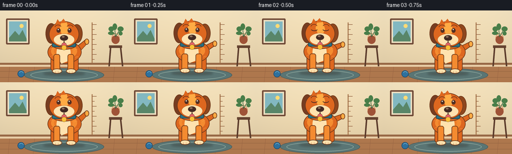
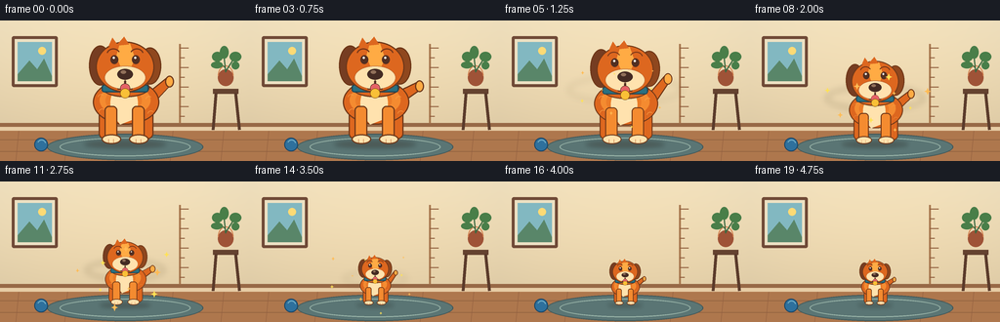

CODING AGENTS AS PIXEL WORLD MODELS
traex/GPT-5.6-Sol · instance_preservation_0048
点击播放 · 原生 RGB 像素
逐轮保存的候选
回放视频、检查图与代码变化。
每份候选均可单独播放。实际图片检查记录在下方工具轨迹中。
候选 01播放与检查图
点击播放 · 原生 RGB 像素


展开代码变化
--- 上一保存版本
+++ 本次保存版本
@@ -0,0 +1,193 @@
+from pathlib import Path
+import math
+import numpy as np
+from PIL import Image, ImageDraw, ImageFilter
+import artifact_io
+
+W, H, N = 256, 144, 20
+SS = 4
+
+def sc(v): return int(round(v * SS))
+def box(b): return tuple(sc(x) for x in b)
+
+def lerp(a,b,t): return a+(b-a)*t
+def smooth(t):
+ t=max(0,min(1,t)); return t*t*(3-2*t)
+
+def draw_background(frame):
+ # warm, softly lit room gradient
+ arr=np.zeros((H*SS,W*SS,3),dtype=np.uint8)
+ yy=np.linspace(0,1,H*SS)[:,None]
+ xx=np.linspace(0,1,W*SS)[None,:]
+ vign=((xx-.5)**2 + (yy-.42)**2)
+ arr[:,:,0]=np.clip(248-22*yy-25*vign,0,255)
+ arr[:,:,1]=np.clip(229-26*yy-17*vign,0,255)
+ arr[:,:,2]=np.clip(190-29*yy-5*vign,0,255)
+ im=Image.fromarray(arr,'RGB')
+ d=ImageDraw.Draw(im)
+ # wall paneling and baseboard
+ d.rectangle(box((0,105,256,109)), fill=(151,104,70))
+ d.rectangle(box((0,109,256,113)), fill=(231,204,165))
+ d.rectangle(box((0,113,256,144)), fill=(174,119,77))
+ # floorboards
+ for y in (122,134): d.line((0,sc(y),sc(256),sc(y)), fill=(133,88,59), width=sc(.6))
+ for x in (19,69,121,177,229):
+ d.line((sc(x),sc(113),sc(x-3),sc(144)),fill=(146,96,64),width=sc(.6))
+ # back rug, fixed size cue
+ d.ellipse(box((48,116,208,143)), fill=(90,117,116), outline=(65,88,90), width=sc(1))
+ d.ellipse(box((61,120,195,139)), outline=(154,181,169), width=sc(1))
+ # framed picture left
+ d.rounded_rectangle(box((12,16,59,68)), radius=sc(2), fill=(111,73,54))
+ d.rectangle(box((15,19,56,65)), fill=(237,225,195))
+ d.rectangle(box((18,22,53,62)), fill=(130,184,193))
+ d.ellipse(box((39,27,47,35)), fill=(253,218,117))
+ d.polygon([ (sc(18),sc(55)),(sc(30),sc(41)),(sc(38),sc(50)),(sc(45),sc(39)),(sc(53),sc(57)),(sc(53),sc(62)),(sc(18),sc(62))], fill=(89,134,105))
+ # size chart behind dog, visible to right
+ d.line((sc(184),sc(24),sc(184),sc(105)), fill=(169,121,80), width=sc(2))
+ for i,y in enumerate(range(28,106,10)):
+ length=9 if i%2==0 else 5
+ d.line((sc(184),sc(y),sc(184+length),sc(y)), fill=(145,96,63), width=sc(1))
+ # side table and plant on right
+ d.rectangle(box((218,70,244,75)), fill=(101,67,48))
+ d.line((sc(221),sc(74),sc(218),sc(112)), fill=(91,59,43), width=sc(3))
+ d.line((sc(241),sc(74),sc(245),sc(112)), fill=(91,59,43), width=sc(3))
+ d.ellipse(box((223,50,239,67)), fill=(159,83,55))
+ d.arc(box((223,46,239,67)),180,360,fill=(210,126,77),width=sc(1))
+ # plant stems/leaves
+ d.line((sc(231),sc(53),sc(229),sc(34)),fill=(58,105,64),width=sc(1.3))
+ d.line((sc(231),sc(52),sc(240),sc(38)),fill=(58,105,64),width=sc(1.2))
+ d.line((sc(231),sc(49),sc(220),sc(38)),fill=(58,105,64),width=sc(1.2))
+ for b in [(217,32,228,42),(235,32,247,42),(225,26,234,39),(216,42,228,49),(237,42,245,50)]:
+ d.ellipse(box(b),fill=(73,126,73))
+ # little blue ball provides a stable size reference
+ d.ellipse(box((35,120,49,134)), fill=(46,112,157), outline=(27,72,105), width=sc(1))
+ d.arc(box((38,122,47,131)),205,345,fill=(119,179,201),width=sc(1))
+ return im
+
+def poly(draw, pts, fill, outline=None, width=1):
+ pts2=[(sc(x),sc(y)) for x,y in pts]
+ draw.polygon(pts2,fill=fill)
+ if outline: draw.line(pts2+[pts2[0]],fill=outline,width=sc(width),joint='curve')
+
+def dog_layer(scale, anchor_x, baseline, phase, blink, small_spark=False):
+ # draw the same distinctive golden-orange dog, transformed uniformly around its paws
+ layer=Image.new('RGBA',(W*SS,H*SS),(0,0,0,0))
+ d=ImageDraw.Draw(layer)
+ def X(x): return anchor_x + x*scale
+ def Y(y): return baseline + y*scale
+ def B(t): return tuple(sc(v) for v in (X(t[0]),Y(t[1]),X(t[2]),Y(t[3])))
+ def P(pts): return [(sc(X(x)),sc(Y(y))) for x,y in pts]
+ lw=max(sc(.7),sc(1.15*scale))
+ edge=(111,56,25,255)
+ orange=(221,103,31,255); light=(244,139,48,255); hi=(255,171,68,255)
+ cream=(255,226,174,255); dark=(82,47,34,255)
+ # tail behind body: lively but restrained wag, thickness scales
+ wag=math.sin(phase)*7
+ tail_pts=[(28,-56),(43,-68+wag),(47,-61+wag),(34,-47)]
+ d.polygon(P(tail_pts),fill=orange)
+ d.line(P(tail_pts+[tail_pts[0]]),fill=edge,width=lw,joint='curve')
+ d.ellipse(B((41,-70+wag,50,-58+wag)),fill=hi,outline=edge,width=lw)
+ # back legs
+ d.rounded_rectangle(B((-27,-39,-10,-5)),radius=sc(6*scale),fill=orange,outline=edge,width=lw)
+ d.rounded_rectangle(B((14,-39,29,-5)),radius=sc(6*scale),fill=orange,outline=edge,width=lw)
+ # body with layered fur light
+ d.ellipse(B((-33,-66,35,-20)),fill=orange,outline=edge,width=lw)
+ d.ellipse(B((-26,-61,26,-29)),fill=light)
+ d.ellipse(B((-20,-58,17,-31)),fill=(235,124,40,255))
+ # chest bib
+ d.ellipse(B((-15,-60,13,-24)),fill=cream)
+ d.polygon(P([(-13,-50),(12,-50),(8,-25),(-5,-20),(-12,-29)]),fill=cream)
+ # front legs in front and paws
+ for a,b in [(-21,-8),(7,20)]:
+ d.rounded_rectangle(B((a,-39,b,-4)),radius=sc(4.5*scale),fill=light,outline=edge,width=lw)
+ d.ellipse(B((a-3,-10,b+4,0)),fill=cream,outline=edge,width=lw)
+ # tiny toe separations
+ for dx in (a+4,a+9): d.line((sc(X(dx)),sc(Y(-5)),sc(X(dx)),sc(Y(-1.5))),fill=(193,116,67),width=max(1,sc(.45*scale)))
+ # neck, collar
+ d.ellipse(B((-24,-68,25,-48)),fill=orange,outline=edge,width=lw)
+ d.rounded_rectangle(B((-24,-61,24,-53)),radius=sc(2.8*scale),fill=(42,112,129,255),outline=(31,72,88,255),width=lw)
+ # head and floppy ears
+ # right ear first
+ d.ellipse(B((14,-99,37,-61)),fill=(143,71,30,255),outline=edge,width=lw)
+ d.ellipse(B((-37,-101,-14,-60)),fill=(118,61,34,255),outline=edge,width=lw)
+ d.ellipse(B((-30,-105,30,-53)),fill=orange,outline=edge,width=lw)
+ # face highlight / signature forehead blaze
+ d.polygon(P([(-5,-104),(5,-103),(10,-88),(5,-76),(-4,-78),(-9,-90)]),fill=hi)
+ # brow tufts
+ d.polygon(P([(-17,-100),(-13,-109),(-8,-102),(-1,-110),(4,-102)]),fill=orange)
+ # eyes and brows
+ eye_y=-87
+ d.arc(B((-19,-98,-5,-86)),195,335,fill=(117,54,25),width=max(sc(.8),lw))
+ d.arc(B((5,-98,19,-86)),205,345,fill=(117,54,25),width=max(sc(.8),lw))
+ if blink:
+ d.arc(B((-18,-91,-5,-84)),10,170,fill=dark,width=max(sc(1),sc(1.4*scale)))
+ d.arc(B((5,-91,18,-84)),10,170,fill=dark,width=max(sc(1),sc(1.4*scale)))
+ else:
+ for cx in (-11,11):
+ d.ellipse(B((cx-4,eye_y-4,cx+4,eye_y+5)),fill=dark)
+ d.ellipse(B((cx-1.8,eye_y-2.5,cx+.5,eye_y-.2)),fill=(255,255,240,255))
+ # muzzle
+ d.ellipse(B((-21,-80,21,-56)),fill=cream,outline=(183,100,49,255),width=max(1,sc(.55*scale)))
+ d.ellipse(B((-8,-77,8,-66)),fill=(68,43,35,255))
+ d.ellipse(B((-4.5,-75.5,1,-72)),fill=(145,112,90,255))
+ d.line((sc(X(0)),sc(Y(-67)),sc(X(0)),sc(Y(-62))),fill=dark,width=max(1,sc(.8*scale)))
+ # happy mouth and tongue
+ d.arc(B((-13,-71,1,-56)),350,105,fill=dark,width=max(sc(1),sc(1.1*scale)))
+ d.arc(B((-1,-71,13,-56)),75,190,fill=dark,width=max(sc(1),sc(1.1*scale)))
+ d.ellipse(B((-5,-62,5,-53)),fill=(229,98,102,255),outline=dark,width=max(1,sc(.45*scale)))
+ # collar tag, constant identity cue
+ d.ellipse(B((-5,-57,5,-47)),fill=(249,192,55,255),outline=(126,79,20,255),width=max(1,sc(.55*scale)))
+ # fur detail strokes
+ for x,y in [(-25,-48),(24,-46),(-24,-33),(26,-31)]:
+ d.arc(B((x-3,y-3,x+4,y+4)),190,310,fill=(255,161,62,220),width=max(1,sc(.45*scale)))
+ return layer
+
+def make_frame(i):
+ im=draw_background(i)
+ # Scale: hold big, magical smooth reduction, hold small
+ if i <= 3: t=0.0
+ elif i >= 16: t=1.0
+ else: t=smooth((i-3)/13)
+ scale=lerp(1.0,.43,t)
+ # minuscule bounce keeps it alive without compromising fixed anchor/identity
+ baseline=126.5 - (1.2*math.sin(i*.85) if i in (1,2,17,18) else 0)
+ # shadow shrinks together, grounding the dog
+ sd=Image.new('RGBA',im.size,(0,0,0,0)); sdraw=ImageDraw.Draw(sd)
+ sw=42*scale; sh=7*scale
+ sdraw.ellipse(box((128-sw,baseline-sh*.45,128+sw,baseline+sh*.55)),fill=(55,41,31,90))
+ sd=sd.filter(ImageFilter.GaussianBlur(sc(2.2)))
+ im=Image.alpha_composite(im.convert('RGBA'),sd)
+ # transformation halo during scaling; always behind dog
+ if 4 <= i <= 15:
+ glow=Image.new('RGBA',im.size,(0,0,0,0)); gd=ImageDraw.Draw(glow)
+ alpha=int(90*math.sin(math.pi*(i-3)/13))
+ radius=52*scale+8
+ gd.ellipse(box((128-radius,baseline-58*scale-radius*.25,128+radius,baseline-58*scale+radius*.25)),outline=(255,207,86,alpha),width=sc(2))
+ glow=glow.filter(ImageFilter.GaussianBlur(sc(3)))
+ im=Image.alpha_composite(im,glow)
+ blink=(i==2 or i==18)
+ im=Image.alpha_composite(im,dog_layer(scale,128,baseline,i*.8,blink))
+ # sparkling spiral foreground makes change feel intentional; particles avoid covering face
+ if 4 <= i <= 15:
+ pd=ImageDraw.Draw(im)
+ strength=math.sin(math.pi*(i-3)/13)
+ for k in range(9):
+ ang=i*.7+k*2.399
+ r=25+4*k
+ x=128+math.cos(ang)*r
+ y=baseline-52*scale+math.sin(ang)*r*.62
+ rr=(1.0+(k%3)*.45)*strength
+ col=(255,226 if k%2 else 188,86,210)
+ # four point stars
+ pts=[(sc(x),sc(y-rr*2)),(sc(x+rr*.55),sc(y-rr*.55)),(sc(x+rr*2),sc(y)),(sc(x+rr*.55),sc(y+rr*.55)),(sc(x),sc(y+rr*2)),(sc(x-rr*.55),sc(y+rr*.55)),(sc(x-rr*2),sc(y)),(sc(x-rr*.55),sc(y-rr*.55))]
+ pd.polygon(pts,fill=col)
+ # subtle cinematic top highlight
+ im=im.convert('RGB').resize((W,H),Image.Resampling.LANCZOS)
+ return np.array(im,dtype=np.uint8)
+
+def main():
+ frames=np.stack([make_frame(i) for i in range(N)],axis=0)
+ artifact_io.save(frames,Path(__file__).resolve().parent)
+
+if __name__=='__main__':
+ main()
可观测工具轨迹
实际执行的命令与返回图片。
命令 1exit 0
/bin/bash -lc "cat prompt.txt && printf '\\n---RULES---\\n' && cat GENERATION_RULES.md && printf '\\n---SPEC---\\n' && cat task_spec.json"
命令 2exit 0
/bin/bash -lc "find . -maxdepth 2 -type f -printf '%p %s bytes\\n' | sort | head -200"
命令 3exit 0
/bin/bash -lc 'cat artifact_io.py'
命令 4exit 0
/bin/bash -lc "cat > generate.py <<'PY'
from pathlib import Path
import math
import numpy as np
from PIL import Image, ImageDraw, ImageFilter
import artifact_io
W, H, N = 256, 144, 20
SS = 4
def sc(v): return int(round(v * SS))
def box(b): return tuple(sc(x) for x in b)
def lerp(a,b,t): return a+(b-a)*t
def smooth(t):
t=max(0,min(1,t)); return t*t*(3-2*t)
def draw_background(frame):
# warm, softly lit room gradient
arr=np.zeros((H*SS,W*SS,3),dtype=np.uint8)
yy=np.linspace(0,1,H*SS)[:,None]
xx=np.linspace(0,1,W*SS)[None,:]
vign=((xx-.5)**2 + (yy-.42)**2)
arr[:,:,0]=np.clip(248-22*yy-25*vign,0,255)
arr[:,:,1]=np.clip(229-26*yy-17*vign,0,255)
arr[:,:,2]=np.clip(190-29*yy-5*vign,0,255)
im=Image.fromarray(arr,'RGB')
d=ImageDraw.Draw(im)
# wall paneling and baseboard
d.rectangle(box((0,105,256,109)), fill=(151,104,70))
d.rectangle(box((0,109,256,113)), fill=(231,204,165))
d.rectangle(box((0,113,256,144)), fill=(174,119,77))
# floorboards
for y in (122,134): d.line((0,sc(y),sc(256),sc(y)), fill=(133,88,59), width=sc(.6))
for x in (19,69,121,177,229):
d.line((sc(x),sc(113),sc(x-3),sc(144)),fill=(146,96,64),width=sc(.6))
# back rug, fixed size cue
d.ellipse(box((48,116,208,143)), fill=(90,117,116), outline=(65,88,90), width=sc(1))
d.ellipse(box((61,120,195,139)), outline=(154,181,169), width=sc(1))
# framed picture left
d.rounded_rectangle(box((12,16,59,68)), radius=sc(2), fill=(111,73,54))
d.rectangle(box((15,19,56,65)), fill=(237,225,195))
d.rectangle(box((18,22,53,62)), fill=(130,184,193))
d.ellipse(box((39,27,47,35)), fill=(253,218,117))
d.polygon([ (sc(18),sc(55)),(sc(30),sc(41)),(sc(38),sc(50)),(sc(45),sc(39)),(sc(53),sc(57)),(sc(53),sc(62)),(sc(18),sc(62))], fill=(89,134,105))
# size chart behind dog, visible to right
d.line((sc(184),sc(24),sc(184),sc(105)), fill=(169,121,80), width=sc(2))
for i,y in enumerate(range(28,106,10)):
length=9 if i%2==0 else 5
d.line((sc(184),sc(y),sc(184+length),sc(y)), fill=(145,96,63), width=sc(1))
# side table and plant on right
d.rectangle(box((218,70,244,75)), fill=(101,67,48))
d.line((sc(221),sc(74),sc(218),sc(112)), fill=(91,59,43), width=sc(3))
d.line((sc(241),sc(74),sc(245),sc(112)), fill=(91,59,43), width=sc(3))
d.ellipse(box((223,50,239,67)), fill=(159,83,55))
d.arc(box((223,46,239,67)),180,360,fill=(210,126,77),width=sc(1))
# plant stems/leaves
d.line((sc(231),sc(53),sc(229),sc(34)),fill=(58,105,64),width=sc(1.3))
d.line((sc(231),sc(52),sc(240),sc(38)),fill=(58,105,64),width=sc(1.2))
d.line((sc(231),sc(49),sc(220),sc(38)),fill=(58,105,64),width=sc(1.2))
for b in [(217,32,228,42),(235,32,247,42),(225,26,234,39),(216,42,228,49),(237,42,245,50)]:
d.ellipse(box(b),fill=(73,126,73))
# little blue ball provides a stable size reference
d.ellipse(box((35,120,49,134)), fill=(46,112,157), outline=(27,72,105), width=sc(1))
d.arc(box((38,122,47,131)),205,345,fill=(119,179,201),width=sc(1))
return im
def poly(draw, pts, fill, outline=None, width=1):
pts2=[(sc(x),sc(y)) for x,y in pts]
draw.polygon(pts2,fill=fill)
if outline: draw.line(pts2+[pts2[0]],fill=outline,width=sc(width),joint='curve')
def dog_layer(scale, anchor_x, baseline, phase, blink, small_spark=False):
# draw the same distinctive golden-orange dog, transformed uniformly around its paws
layer=Image.new('RGBA',(W*SS,H*SS),(0,0,0,0))
d=ImageDraw.Draw(layer)
def X(x): return anchor_x + x*scale
def Y(y): return baseline + y*scale
def B(t): return tuple(sc(v) for v in (X(t[0]),Y(t[1]),X(t[2]),Y(t[3])))
def P(pts): return [(sc(X(x)),sc(Y(y))) for x,y in pts]
lw=max(sc(.7),sc(1.15*scale))
edge=(111,56,25,255)
orange=(221,103,31,255); light=(244,139,48,255); hi=(255,171,68,255)
cream=(255,226,174,255); dark=(82,47,34,255)
# tail behind body: lively but restrained wag, thickness scales
wag=math.sin(phase)*7
tail_pts=[(28,-56),(43,-68+wag),(47,-61+wag),(34,-47)]
d.polygon(P(tail_pts),fill=orange)
d.line(P(tail_pts+[tail_pts[0]]),fill=edge,width=lw,joint='curve')
d.ellipse(B((41,-70+wag,50,-58+wag)),fill=hi,outline=edge,width=lw)
# back legs
d.rounded_rectangle(B((-27,-39,-10,-5)),radius=sc(6*scale),fill=orange,outline=edge,width=lw)
d.rounded_rectangle(B((14,-39,29,-5)),radius=sc(6*scale),fill=orange,outline=edge,width=lw)
# body with layered fur light
d.ellipse(B((-33,-66,35,-20)),fill=orange,outline=edge,width=lw)
d.ellipse(B((-26,-61,26,-29)),fill=light)
d.ellipse(B((-20,-58,17,-31)),fill=(235,124,40,255))
# chest bib
d.ellipse(B((-15,-60,13,-24)),fill=cream)
d.polygon(P([(-13,-50),(12,-50),(8,-25),(-5,-20),(-12,-29)]),fill=cream)
# front legs in front and paws
for a,b in [(-21,-8),(7,20)]:
d.rounded_rectangle(B((a,-39,b,-4)),radius=sc(4.5*scale),fill=light,outline=edge,width=lw)
d.ellipse(B((a-3,-10,b+4,0)),fill=cream,outline=edge,width=lw)
# tiny toe separations
for dx in (a+4,a+9): d.line((sc(X(dx)),sc(Y(-5)),sc(X(dx)),sc(Y(-1.5))),fill=(193,116,67),width=max(1,sc(.45*scale)))
# neck, collar
d.ellipse(B((-24,-68,25,-48)),fill=orange,outline=edge,width=lw)
d.rounded_rectangle(B((-24,-61,24,-53)),radius=sc(2.8*scale),fill=(42,112,129,255),outline=(31,72,88,255),width=lw)
# head and floppy ears
# right ear first
d.ellipse(B((14,-99,37,-61)),fill=(143,71,30,255),outline=edge,width=lw)
d.ellipse(B((-37,-101,-14,-60)),fill=(118,61,34,255),outline=edge,width=lw)
d.ellipse(B((-30,-105,30,-53)),fill=orange,outline=edge,width=lw)
# face highlight / signature forehead blaze
d.polygon(P([(-5,-104),(5,-103),(10,-88),(5,-76),(-4,-78),(-9,-90)]),fill=hi)
# brow tufts
d.polygon(P([(-17,-100),(-13,-109),(-8,-102),(-1,-110),(4,-102)]),fill=orange)
# eyes and brows
eye_y=-87
d.arc(B((-19,-98,-5,-86)),195,335,fill=(117,54,25),width=max(sc(.8),lw))
d.arc(B((5,-98,19,-86)),205,345,fill=(117,54,25),width=max(sc(.8),lw))
if blink:
d.arc(B((-18,-91,-5,-84)),10,170,fill=dark,width=max(sc(1),sc(1.4*scale)))
d.arc(B((5,-91,18,-84)),10,170,fill=dark,width=max(sc(1),sc(1.4*scale)))
else:
for cx in (-11,11):
d.ellipse(B((cx-4,eye_y-4,cx+4,eye_y+5)),fill=dark)
d.ellipse(B((cx-1.8,eye_y-2.5,cx+.5,eye_y-.2)),fill=(255,255,240,255))
# muzzle
d.ellipse(B((-21,-80,21,-56)),fill=cream,outline=(183,100,49,255),width=max(1,sc(.55*scale)))
d.ellipse(B((-8,-77,8,-66)),fill=(68,43,35,255))
d.ellipse(B((-4.5,-75.5,1,-72)),fill=(145,112,90,255))
d.line((sc(X(0)),sc(Y(-67)),sc(X(0)),sc(Y(-62))),fill=dark,width=max(1,sc(.8*scale)))
# happy mouth and tongue
d.arc(B((-13,-71,1,-56)),350,105,fill=dark,width=max(sc(1),sc(1.1*scale)))
d.arc(B((-1,-71,13,-56)),75,190,fill=dark,width=max(sc(1),sc(1.1*scale)))
d.ellipse(B((-5,-62,5,-53)),fill=(229,98,102,255),outline=dark,width=max(1,sc(.45*scale)))
# collar tag, constant identity cue
d.ellipse(B((-5,-57,5,-47)),fill=(249,192,55,255),outline=(126,79,20,255),width=max(1,sc(.55*scale)))
# fur detail strokes
for x,y in [(-25,-48),(24,-46),(-24,-33),(26,-31)]:
d.arc(B((x-3,y-3,x+4,y+4)),190,310,fill=(255,161,62,220),width=max(1,sc(.45*scale)))
return layer
def make_frame(i):
im=draw_background(i)
# Scale: hold big, magical smooth reduction, hold small
if i <= 3: t=0.0
elif i >= 16: t=1.0
else: t=smooth((i-3)/13)
scale=lerp(1.0,.43,t)
# minuscule bounce keeps it alive without compromising fixed anchor/identity
baseline=126.5 - (1.2*math.sin(i*.85) if i in (1,2,17,18) else 0)
# shadow shrinks together, grounding the dog
sd=Image.new('RGBA',im.size,(0,0,0,0)); sdraw=ImageDraw.Draw(sd)
sw=42*scale; sh=7*scale
sdraw.ellipse(box((128-sw,baseline-sh*.45,128+sw,baseline+sh*.55)),fill=(55,41,31,90))
sd=sd.filter(ImageFilter.GaussianBlur(sc(2.2)))
im=Image.alpha_composite(im.convert('RGBA'),sd)
# transformation halo during scaling; always behind dog
if 4 <= i <= 15:
glow=Image.new('RGBA',im.size,(0,0,0,0)); gd=ImageDraw.Draw(glow)
alpha=int(90*math.sin(math.pi*(i-3)/13))
radius=52*scale+8
gd.ellipse(box((128-radius,baseline-58*scale-radius*.25,128+radius,baseline-58*scale+radius*.25)),outline=(255,207,86,alpha),width=sc(2))
glow=glow.filter(ImageFilter.GaussianBlur(sc(3)))
im=Image.alpha_composite(im,glow)
blink=(i==2 or i==18)
im=Image.alpha_composite(im,dog_layer(scale,128,baseline,i*.8,blink))
# sparkling spiral foreground makes change feel intentional; particles avoid covering face
if 4 <= i <= 15:
pd=ImageDraw.Draw(im)
strength=math.sin(math.pi*(i-3)/13)
for k in range(9):
ang=i*.7+k*2.399
r=25+4*k
x=128+math.cos(ang)*r
y=baseline-52*scale+math.sin(ang)*r*.62
rr=(1.0+(k%3)*.45)*strength
col=(255,226 if k%2 else 188,86,210)
# four point stars
pts=[(sc(x),sc(y-rr*2)),(sc(x+rr*.55),sc(y-rr*.55)),(sc(x+rr*2),sc(y)),(sc(x+rr*.55),sc(y+rr*.55)),(sc(x),sc(y+rr*2)),(sc(x-rr*.55),sc(y+rr*.55)),(sc(x-rr*2),sc(y)),(sc(x-rr*.55),sc(y-rr*.55))]
pd.polygon(pts,fill=col)
# subtle cinematic top highlight
im=im.convert('RGB').resize((W,H),Image.Resampling.LANCZOS)
return np.array(im,dtype=np.uint8)
def main():
frames=np.stack([make_frame(i) for i in range(N)],axis=0)
artifact_io.save(frames,Path(__file__).resolve().parent)
if __name__=='__main__':
main()
PY
python generate.py
ls -l pixels.npz index.html inspection.png frames/00.png frames/19.png"命令 5exit 0
/bin/bash -lc "python - <<'PY'
import numpy as np
from pathlib import Path
z=np.load('pixels.npz')['pixels']
print('pixels',z.shape,z.dtype,'frames',len(list(Path('frames').glob('*.png'))))
print('all consecutive frames differ:', all(np.any(z[:,:,i]"'!=z[:,:,i-1]) for i in range(1,z.shape[2])))
PY'视觉工具实际返回图片 1

保存候选 1 份；完成命令 5 次；可验证图片返回 1 张。原始 API 响应与完整日志保留在本地。